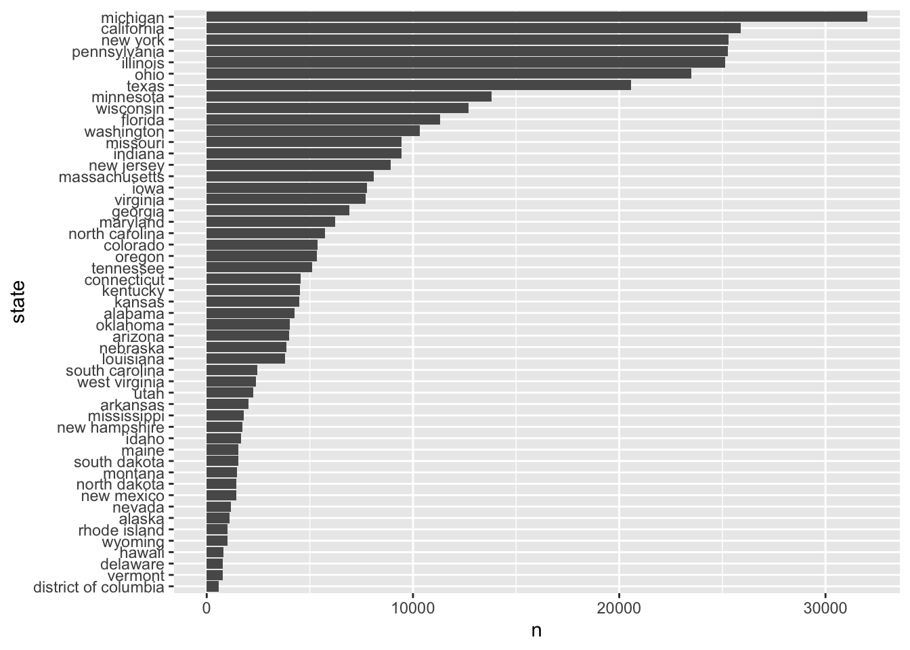

1 section 2.1
1.1 libraries
1.2 data
1.3 EDA
Collapse/show the code below
type n prior_pribabilities
fake 60 0.4
real 90 0.6
Total 150 1.0Null probability model (probability of an article being FAKE)
\[P(B) = 0.4\]
With 0.5 threshold, we would classify every article as real at the expense of 40% fake ones.
Let A = an article has exclamation point in the title, and B = article is fake. Then,
Collapse/show the code below
type title_has_excl n percent
fake FALSE 44 0.73333333
fake TRUE 16 0.26666667
real FALSE 88 0.97777778
real TRUE 2 0.02222222
Total - 150 2.00000000i.e.,
\(P(A|B)\) = P(an article has exclamation point in the title | article is fake) = 26.6%
and
\(P(A|B^c)\) = P(an article has exclamation point in the title | article is real) = 2.22%
We define likelihood function, \(L(. | A)\), when conditioned event is NOT certain, we are evaluating the relative compatibility of data with the uncertain event B.
\[L(B|A) = P(A|B)\]
On the other hand,
Collapse/show the code below
title_has_excl type n percent
FALSE fake 44 0.3333333
FALSE real 88 0.6666667
TRUE fake 16 0.8888889
TRUE real 2 0.1111111
Total - 150 2.0000000i.e.,
Pr(B|A) = 89%, and Pr(B^c|A) = 11%
Note:
\[P(B|A) + P(B^c|A) = 100%\]
but
\[P(A|B) + P(A|B^c) = 28.89% \neq 100%.\]
What if we want to have \(P(A) = P(article has excl in its title)\).
Collapse/show the code below
title_has_excl n percent
FALSE 132 0.88
TRUE 18 0.12
Total 150 1.00\[P(A) = 12\%, p(A^c) = 88\%\]
Create joint distribution
Collapse/show the code below
title_has_excl fake real Total
FALSE 0.2933333 0.58666667 0.88
TRUE 0.1066667 0.01333333 0.12
Total 0.4000000 0.60000000 1.001.4 Now we include data (features to udpate out model)
We want to calculate posterior probability (probability of the same event after observing more evidence that might affect that event)
\[Pr[B| evidence] = Pr[B|A]\]
2 section 2.2
Collapse/show the code below

Collapse/show the code below
# A tibble: 4 × 3
region n percent
<fct> <int> <dbl>
1 midwest 145096 0.388
2 south 90164 0.241
3 northeast 77188 0.206
4 west 61802 0.165Collapse/show the code below
# A tibble: 4 × 4
region word_for_cola n percent
<fct> <chr> <int> <dbl>
1 south pop 7143 0.0510
2 west pop 18187 0.130
3 northeast pop 21103 0.151
4 midwest pop 93544 0.668 Collapse/show the code below
pop_vs_soda %>%
mutate(pop_dummy = if_else(word_for_cola == 'pop', TRUE, FALSE)) %>%
group_by(pop_dummy) %>%
count(region) %>%
group_by(region) %>%
mutate(percent = n/sum(n)) %>%
pivot_wider(names_from = region, values_from = percent, id_cols = pop_dummy) %>%
adorn_totals('col') %>%
adorn_totals('row') pop_dummy midwest northeast south west Total
FALSE 0.3552958 0.7266026 0.92077769 0.7057215 2.708398
TRUE 0.6447042 0.2733974 0.07922231 0.2942785 1.291602
Total 1.0000000 1.0000000 1.00000000 1.0000000 4.000000 pop midwest northeast south west
FALSE 0.3552958 0.7266026 0.92077769 0.7057215
TRUE 0.6447042 0.2733974 0.07922231 0.2942785 region n percent
midwest 0.3876981 0.3876981
northeast 0.2062472 0.2062472
south 0.2409192 0.2409192
west 0.1651356 0.1651356A = someone uses the word ‘pop’ L(M|A) = Pr(A|M) = 0.645 L(N|A) = Pr(A|N) = 0.273 L(S|A) = Pr(A|S) = 0.0792 L(W|A) = Pr(A|W) = 0.294
PRIOR VS Posterior probability P(S) = 0.241 Pr(S|A) = prior * likelihood/(normalization constant) = 0.241 * 0.0792/0.2826
Collapse/show the code below
pop_vs_soda %>%
mutate(pop_dummy = if_else(word_for_cola == 'pop', TRUE, FALSE)) %>%
group_by(pop_dummy) %>%
count(region) %>%
group_by(region) %>%
mutate(percent = n/sum(n)) %>%
filter(pop_dummy == TRUE) %>%
transmute(region, likelihood = percent) %>%
ungroup() %>%
bind_cols(pop_vs_soda %>% count(region) %>% transmute(prior = n/sum(n))) %>%
mutate(posterior = likelihood*prior/sum(likelihood*prior))# A tibble: 4 × 4
region likelihood prior posterior
<fct> <dbl> <dbl> <dbl>
1 midwest 0.645 0.388 0.668
2 northeast 0.273 0.206 0.151
3 south 0.0792 0.241 0.0510
4 west 0.294 0.165 0.130